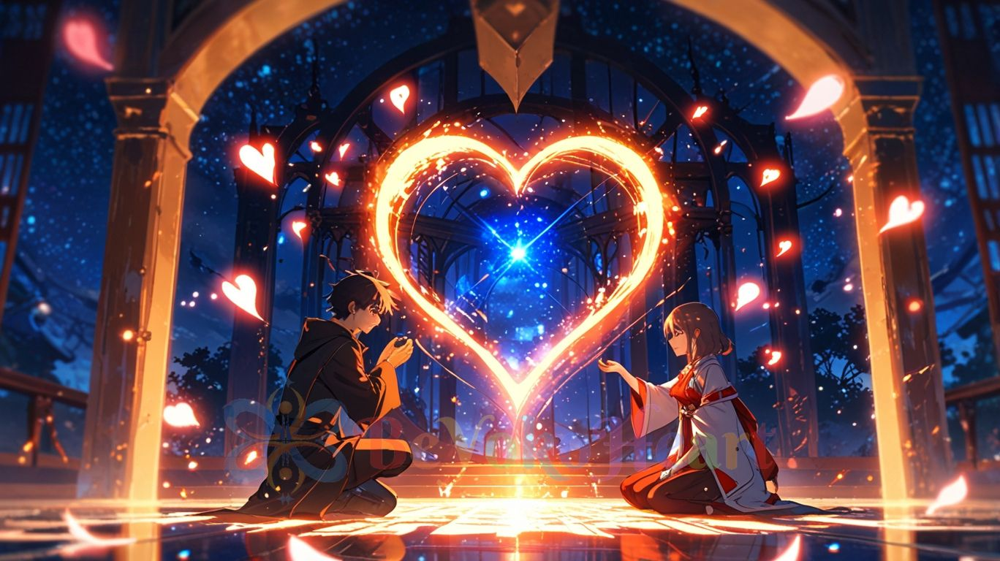
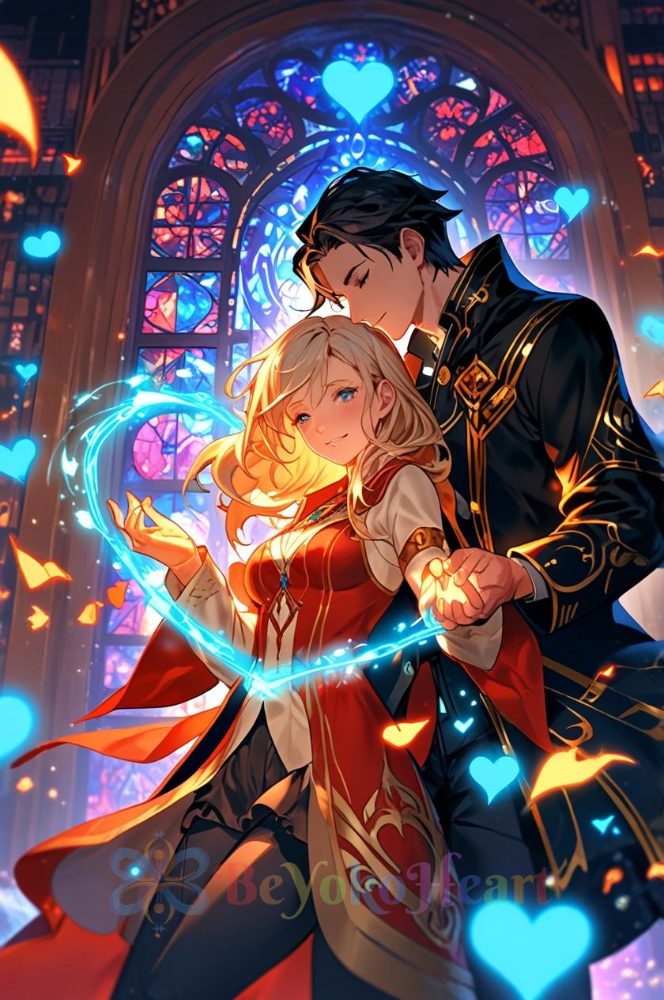
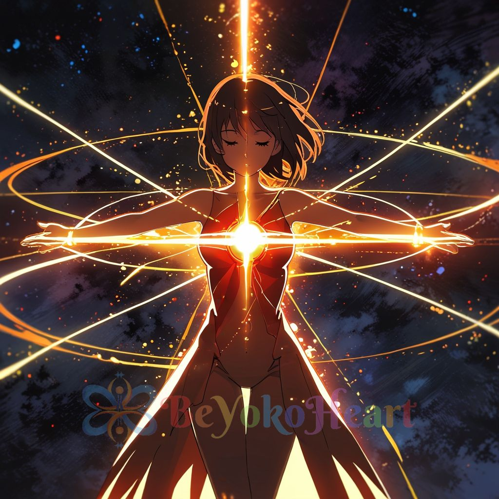
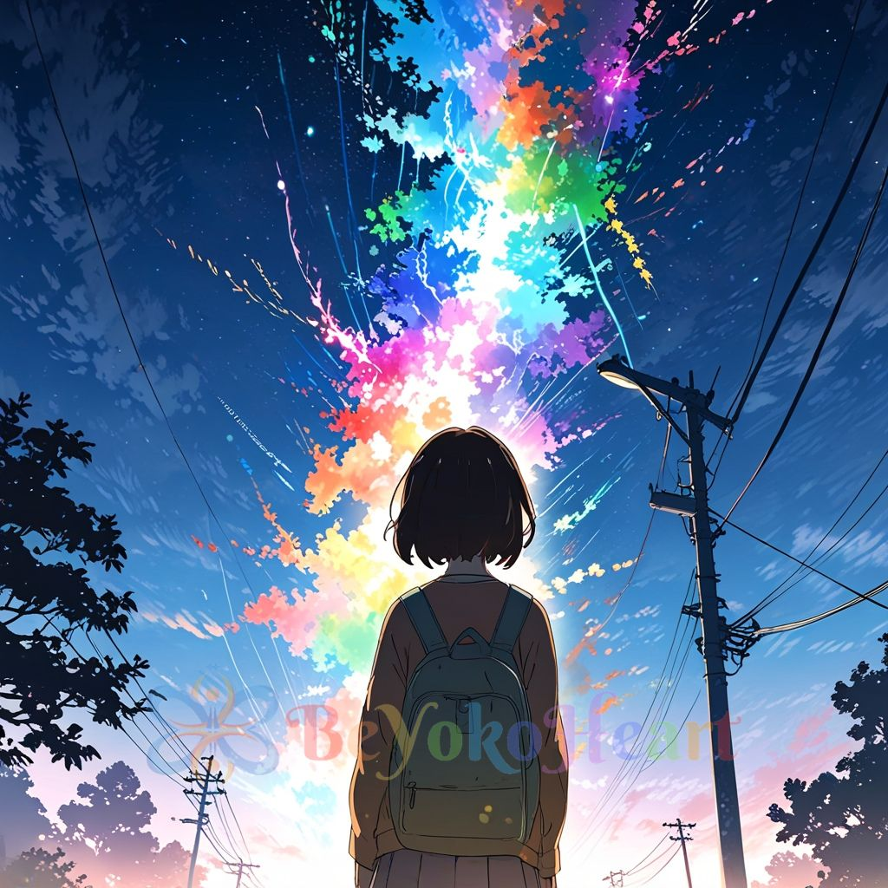
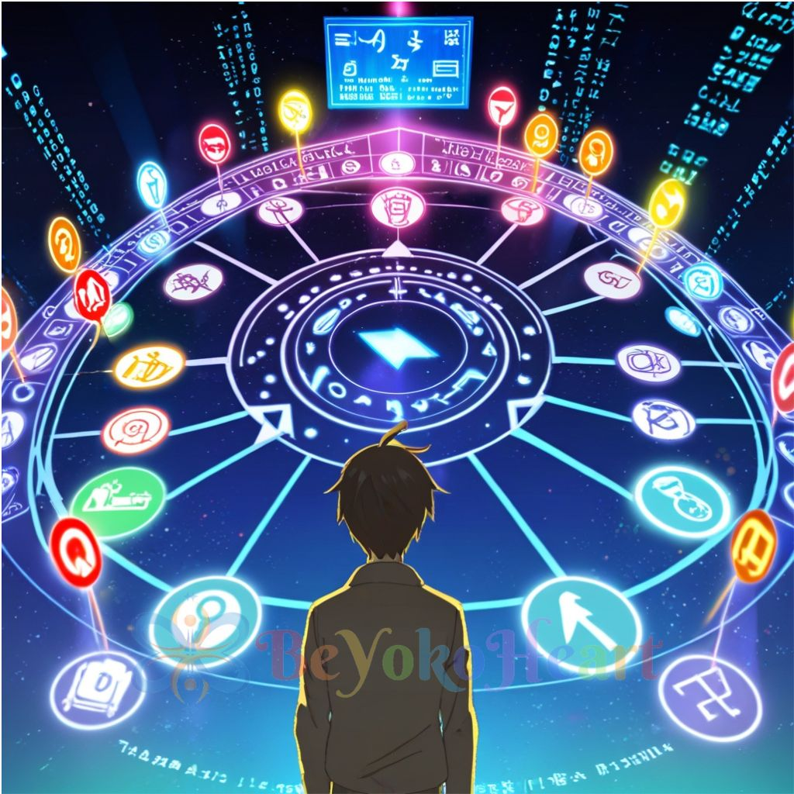
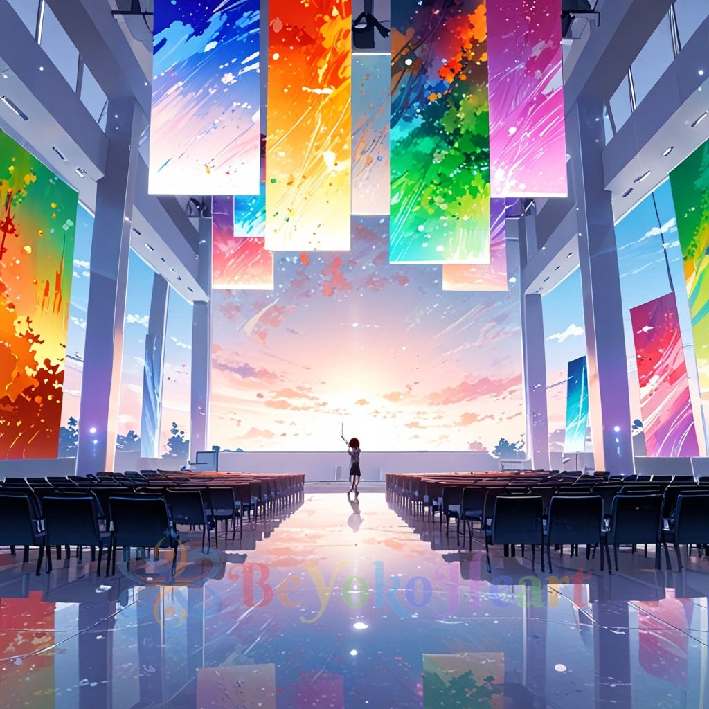
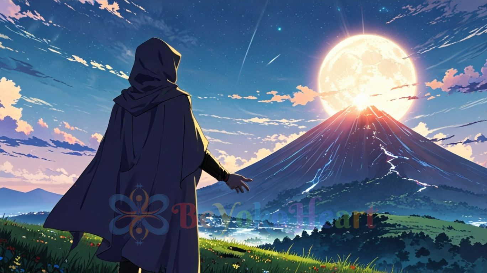
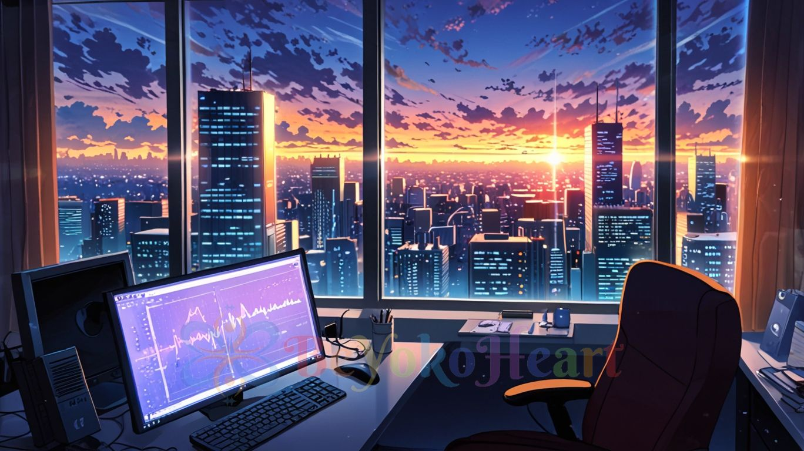
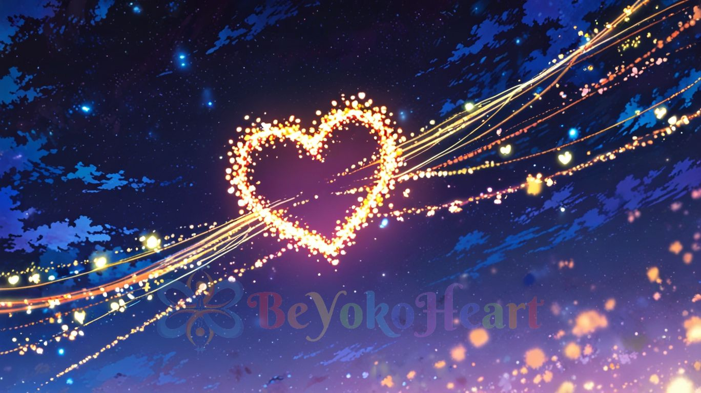

BeYokoheart are individuals dedicated to spiritual growth and transformation. Our mission is to help others discover and develop their inner potential by working with energy and giving answers to questions related to their life path. We offer supporting light to the soul and energetic support from a distance. Thanks to our abilities, we can sense which products, places, or situations resonate with a person and how they influence their personal growth. Our gifts allow people to better understand themselves and their relationships with the world around them — leading to greater harmony and fulfillment in life. We are here to accompany you on your journey, self-discovery, and finding your own path.






What we offer is to give you hints from our feelings and visions related to your idea, intention or an already formed, ongoing project or even a life decision/choice. You will receive answers from us, in response to questions such as whether a particular thing, object, issue, or place resonates with you and to what extent. We can also answer at a given moment what color, type of decor, etc. will be in harmony with you. It all depends on your needs, ideas and our insights into what resonates with you e.g.: the type of products / services you would give. The subject is entirely up to you. If you are interested, please contact us :)
We create paintings usually on canvas using mixed techniques, most often using acrylic paints and other accessories, e.g. glitter, etc. We provide them in digital form, and upon request, after paying for shipping costs, we deliver them in the form of a physical product. For each individual, by entering a state of contemplation, we channel a vision and intuitively choose the canvas size, colors, and additional elements, letting the inspiration guide us. :) Each painting has its own power resonating with a specific person or place. We believe that the energy emanating from these works of art, influences according to the Soul's Plan, the Higher Self both at home and in places of work or business. We paint for you or as a gift for someone else :)
We will provide you with an energetic reading that answers whether a specific person resonates with you and to what extent. All we need are the first names or nicknames (it is important that you know in your consciousness who you are asking about). Based on the vision, message, and feeling we receive, we’ll share with you what has come through e.g.: what to pay attention to, and what to be guided by in a relevant relationship. To make the reading easier, clearer, send us the questions that are most troubling you or are currently most present.

We will send you an energy reading about your place/workplace. We will tell you what information in the form of energy is contained in the place where you spend the most time. What the universe has to tell you about it. We will answer your questions about this topic.

In some cases we can assist you/spend time with you via online messenger of your choice, text message, written chat or phone e.g.:while traveling, shopping, while reorganizing things (e.g.: items of clothing etc. ) into those that resonate with you and those that no longer resonate. If you need to ‘talk things through’ together, based on feelings and inner impressions feel free to write. We are intuitive people. In our conversations and connections, we follow both inner feelings and body reflexes. We practice listening to the voice of the heart and thus recognise what is in harmony with the higher self, our soul/‘upper’ plan at any given time, and what is just a so-called hobby/addition(coming from the ego), and to what extent it truly resonates, meaning it supports your personal growth. We warmly invite you to contact us :)